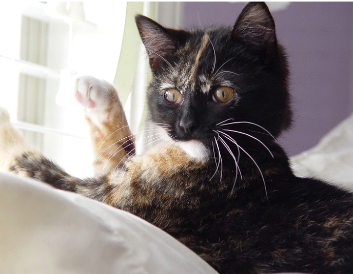
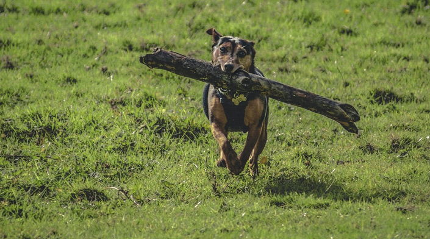
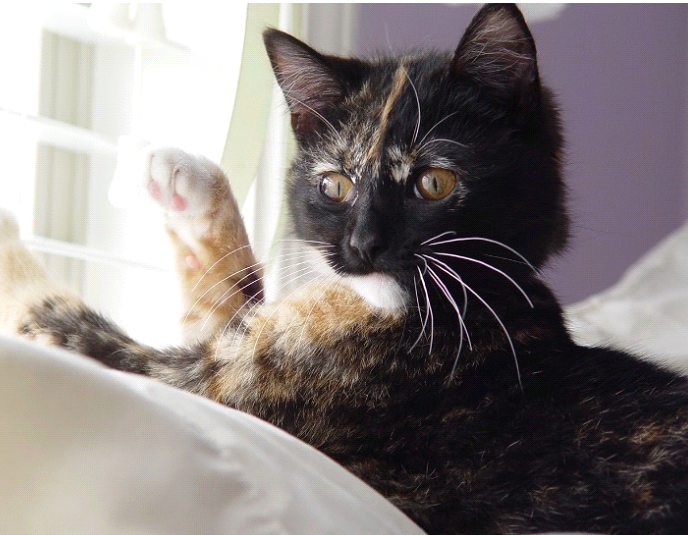
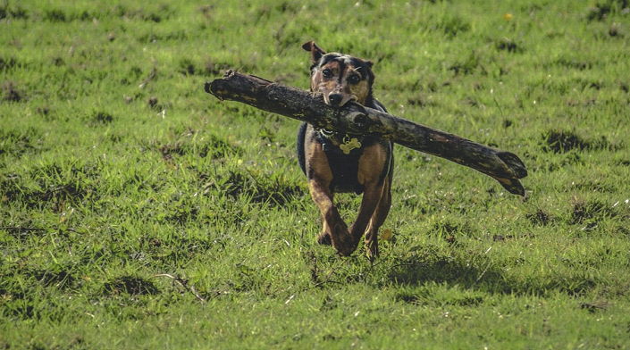

Frequently Asked Questions
Our “Pexperts” typically encounter the following questions when consulting with prospective “pet parents:”
Question: What is the best way to rid my dog or cat of fleas?
Sometimes our furry friends pick up hitchhikers that make them very itchy and uncomfortable. If gone unchecked, fleas can infest your home, making it even more difficult to rid them from your loved one’s coat. To eliminate fleas, choose a shampoo specially formulated to kill fleas and be sure to read and follow all instructions on the label. Repeat treatment as necessary until your pet is free of fleas; if you see skin irritation, stop use immediately and contact your local vet.
Question: How long can I expect my pet bird to live?
The answer can vary widely depending on the type of bird, the size, the environment, and of course, mother nature. Assuming all is well in the external factors that are out of the owner's control, cockatiels and budgies live up to 20 years old on average. However, many parrot variations are known to live nearly an astounding 100 years! As with many living organisms, longevity can be increased by keeping annual veterinarian visits, maintaining a healthy diet, and keeping your feathery friend's environment sanitary.
 


